Examples¶
Here you will find a list of the included examples. Each example have a short description and a screenshot (if applicable).
To run the examples yourself either install pymunk or run it using the convenience run.py script.
Given that pymunk is installed where your python will find it:
>cd examples
>python breakout.py
To run directly without installing anything. From the pymunk source folder:
>cd examples
>python run.py breakout.py
Each example contains something unique. Not all of the examples use the same style. For example, some use the pymunk.pygame_util module to draw stuff, others contain the actual drawing code themselfs. However, each example is self contained. Except for external libraries (such as pygame) and pymunk each example can be run directly to make it easy to read the code and understand what happens even if it means that some code is repeated for each example.
If you have made something that uses pymunk and would like it displayed here or in a showcase section of the site, feel free to contact me!
Example files
- balls_and_lines.py
- pyglet_util_demo.py
- arrows.py
- no_debug.py
- box2d_vertical_stack.py
- polygon_triangulation.py
- shapes_for_draw_demos.py
- damped_rotary_spring_pointer.py
- platformer.py
- py2exe_setup__basic_test.py
- spiderweb.py
- contact_with_friction.py
- flipper.py
- playground.py
- breakout.py
- run.py
- basic_test.py
- slide_and_pinjoint.py
- using_sprites_pyglet.py
- pygame_util_demo.py
- box2d_pyramid.py
- bouncing_balls.py
- newtons_cradle.py
- contact_and_no_flipy.py
- py2exe_setup__breakout.py
- point_query.py
- using_sprites.py
balls_and_lines.py¶
Location: examples/balls_and_lines.py
This example lets you dynamically create static walls and dynamic balls
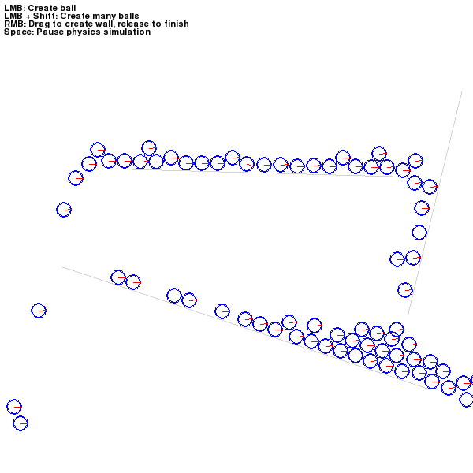pyglet_util_demo.py¶
Location: examples/pyglet_util_demo.py
Showcase what the output of pymunk.pyglet_util draw methods will look like.
See pygame_util_demo.py for a comparison to pygame.
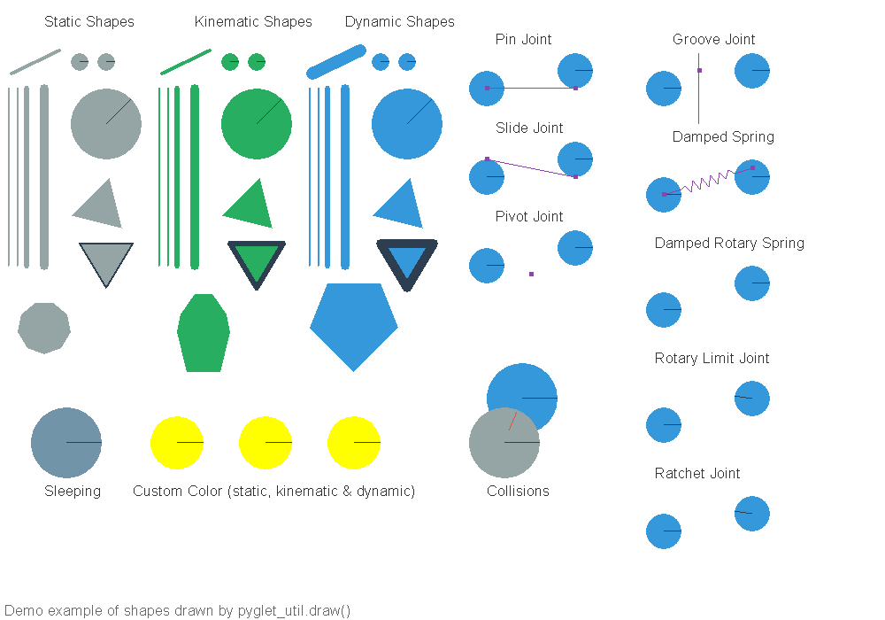arrows.py¶
Location: examples/arrows.py
Showcase of flying arrows that can stick to objects in a somewhat realistic looking way.
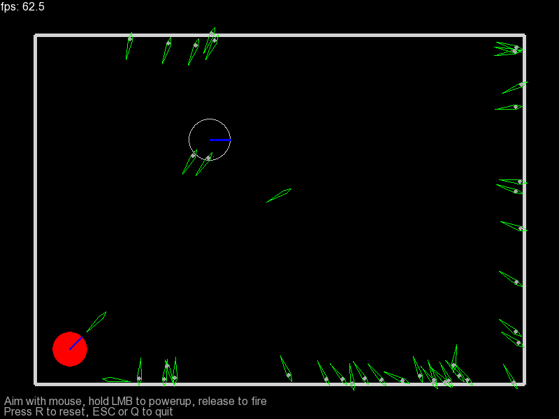no_debug.py¶
Location: examples/no_debug.py
Very simple showcase of how to run pymunk with debug mode off
box2d_vertical_stack.py¶
Location: examples/box2d_vertical_stack.py
Remake of the veritcal stack demo from the box2d testbed.
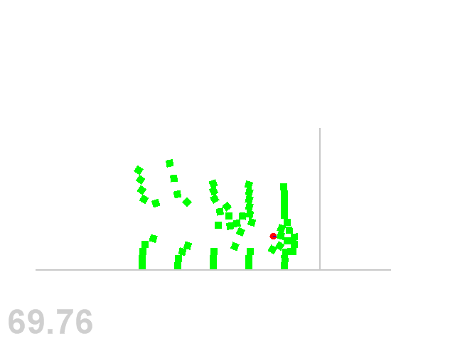polygon_triangulation.py¶
Location: examples/polygon_triangulation.py
Quick demo of using triangulate.py to triangulate/convexise(?) a concave polygon. Not good code as such, but functional and cheap
display: thick red line: drawn polygon medium blue lines: triangles after triangulation thin white lines: convex polygons after convexisation(?)
input: click points (in clockwise order)* to draw a polygon press space to reset
- triangulate() and convexise() actually work on anticlockwise polys to match pymunk, but this demo’s coords are upside-down compared to pymunk (pygame style), so click clockwise to compensate :)
shapes_for_draw_demos.py¶
Location: examples/shapes_for_draw_demos.py
Helper function add_objects for the draw demos. Adds a lot of stuff to a space.
damped_rotary_spring_pointer.py¶
Location: examples/damped_rotary_spring_pointer.py
This example showcase an arrow pointing or aiming towards the cursor.
platformer.py¶
Location: examples/platformer.py
Showcase of a very basic 2d platformer
The red girl sprite is taken from Sithjester’s RMXP Resources: http://untamed.wild-refuge.net/rmxpresources.php?characters
Note
The code of this example is a bit messy. If you adapt this to your own code you might want to structure it a bit differently.
py2exe_setup__basic_test.py¶
Location: examples/py2exe_setup__basic_test.py
Simple example of py2exe to create a exe of the basic_test example.
spiderweb.py¶
Location: examples/spiderweb.py
Showcase of a elastic spiderweb (drawing with pyglet)
It is possible to grab one of the crossings with the mouse
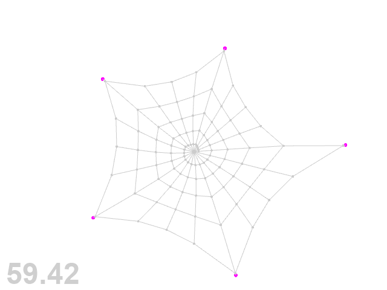contact_with_friction.py¶
Location: examples/contact_with_friction.py
This example spawns (bouncing) balls randomly on a L-shape constructed of two segment shapes. Displays collsion strength and rotating balls thanks to friction. Not interactive.
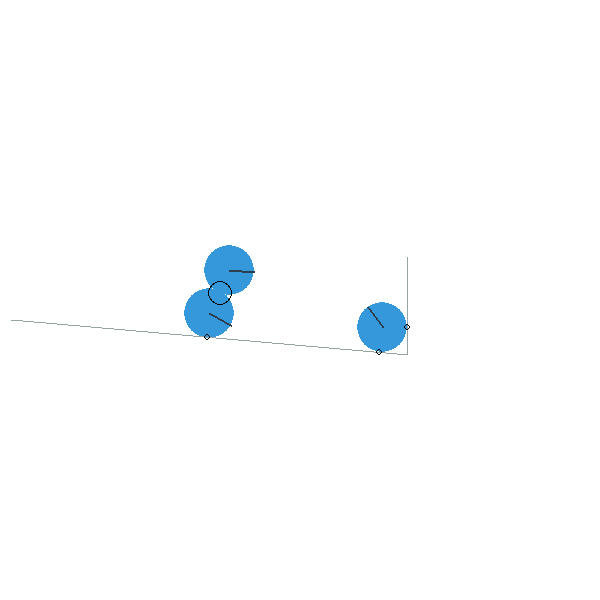playground.py¶
Location: examples/playground.py
A basic playground. Most interesting function is draw a shape, basically move the mouse as you want and pymunk will approximate a Poly shape from the drawing.

breakout.py¶
Location: examples/breakout.py
Very simple breakout clone. A circle shape serves as the paddle, then breakable bricks constructed of Poly-shapes.
The code showcases several pymunk concepts such as elasitcity, impulses, constant object speed, joints, collision handlers and post step callbacks.
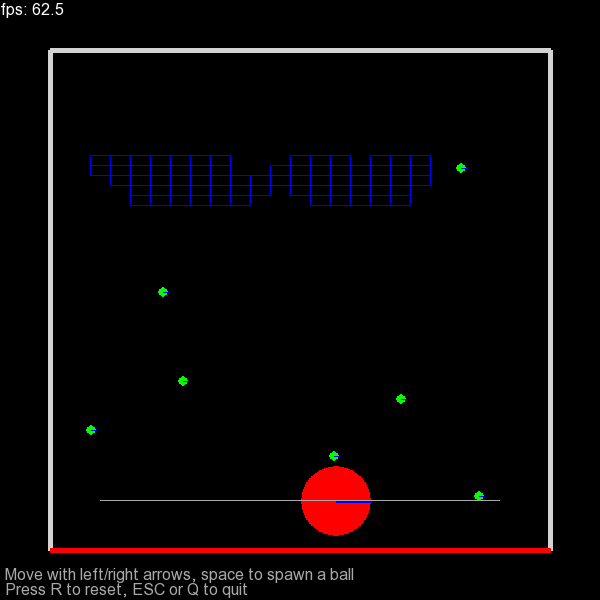run.py¶
Location: examples/run.py
Use to run examples using pymunk located one folder level up. Useful if you have the whole pymunk source tree and want to run the examples in a quick and dirty way. (a poor man’s virtualenv if you like)
For example, to run the breakout demo:
> cd examples
> python run.py breakout.py
basic_test.py¶
Location: examples/basic_test.py
Very simple example that does not depend on any third party library such as pygame or pyglet like the other examples.
slide_and_pinjoint.py¶
Location: examples/slide_and_pinjoint.py
A L shape attached with a joint and constrained to not tip over.

using_sprites_pyglet.py¶
Location: examples/using_sprites_pyglet.py
This example is a clone of the using_sprites example with the difference that it uses pyglet instead of pygame to showcase sprite drawing.
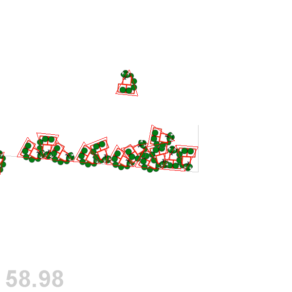pygame_util_demo.py¶
Location: examples/pygame_util_demo.py
Showcase what the output of pymunk.pygame_util draw methods will look like.
See pyglet_util_demo.py for a comparison to pyglet.
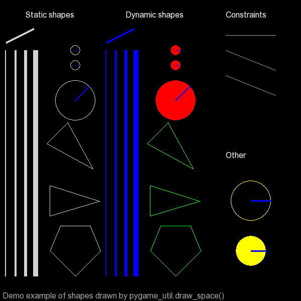box2d_pyramid.py¶
Location: examples/box2d_pyramid.py
Remake of the pyramid demo from the box2d testbed.
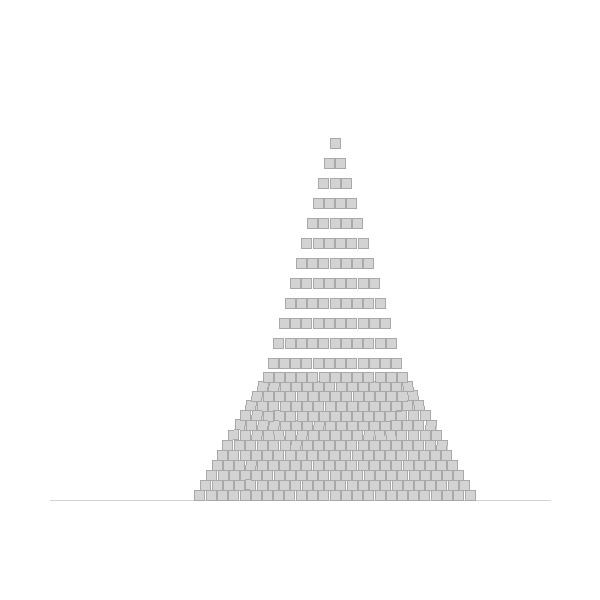bouncing_balls.py¶
Location: examples/bouncing_balls.py
This example spawns (bouncing) balls randomly on a L-shape constructed of two segment shapes. Not interactive.
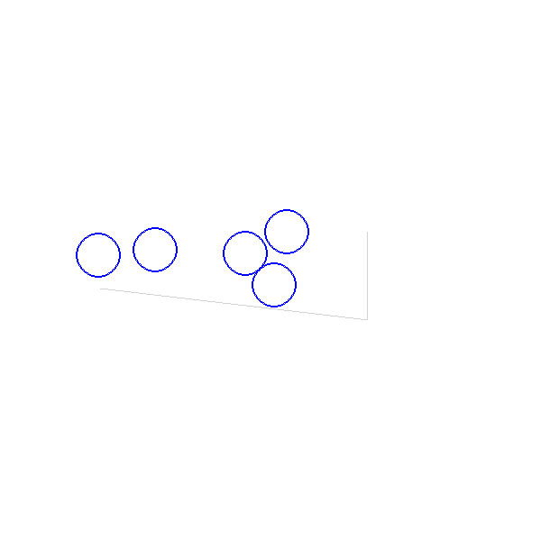newtons_cradle.py¶
Location: examples/newtons_cradle.py
A screensaver version of Newton’s Cradle with an interactive mode.
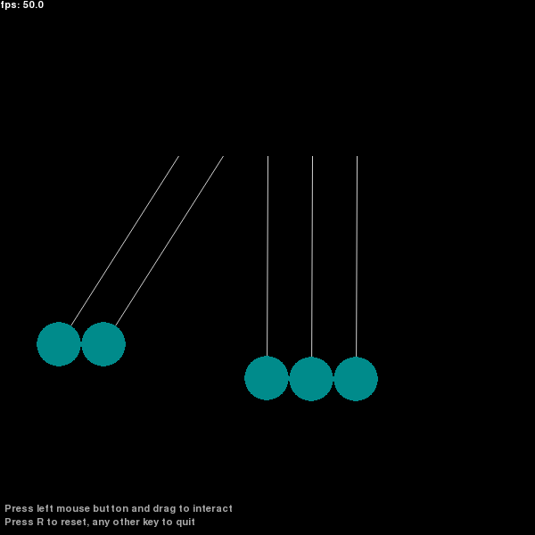contact_and_no_flipy.py¶
Location: examples/contact_and_no_flipy.py
This example spawns (bouncing) balls randomly on a L-shape constructed of two segment shapes. For each collision it draws a red circle with size depending on collision strength. Not interactive.

py2exe_setup__breakout.py¶
Location: examples/py2exe_setup__breakout.py
Example script to create a exe of the breakout example using py2exe.
point_query.py¶
Location: examples/point_query.py
This example showcase point queries by highlighting the shape under the mouse pointer.
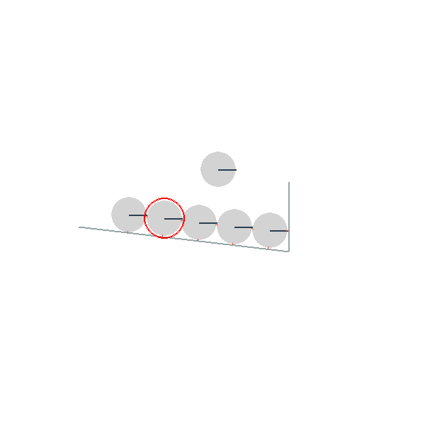using_sprites.py¶
Location: examples/using_sprites.py
Very basic example of using a sprite image to draw a shape more similar how you would do it in a real game instead of the simple line drawings used by the other examples.
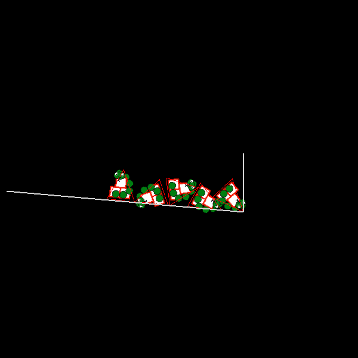

Table Of Contents
- Readme
- News
- Installation
- API Reference
- Examples
- balls_and_lines.py
- pyglet_util_demo.py
- arrows.py
- no_debug.py
- box2d_vertical_stack.py
- polygon_triangulation.py
- shapes_for_draw_demos.py
- damped_rotary_spring_pointer.py
- platformer.py
- py2exe_setup__basic_test.py
- spiderweb.py
- contact_with_friction.py
- flipper.py
- playground.py
- breakout.py
- run.py
- basic_test.py
- slide_and_pinjoint.py
- using_sprites_pyglet.py
- pygame_util_demo.py
- box2d_pyramid.py
- bouncing_balls.py
- newtons_cradle.py
- contact_and_no_flipy.py
- py2exe_setup__breakout.py
- point_query.py
- using_sprites.py
- Tutorials
- Advanced
- Issue Tracker
- Source Repository
- Downloads
- License